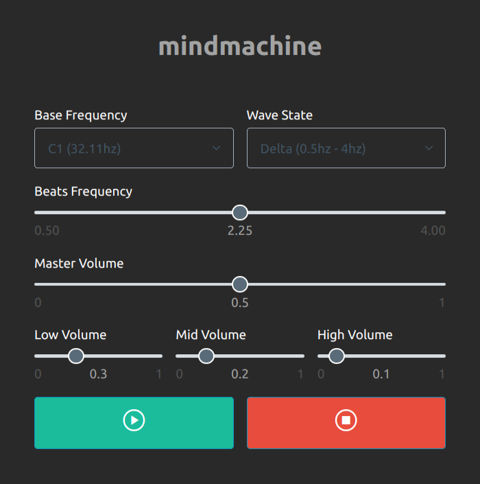

Here you will find examples of projects I've worked on over the years.

Mind Machine
I always wanted one of those 'mind machines' advertised in the 90s, but they went out of fashion before I could afford one. So I built my own, using HTML5, CSS3, Pico.css, Javascript, and the Web Audio API.
Features:
- Base frequency controls 3 oscillators: low, mid, and high
- Dropdown menu to choose wave state (Alpha, Beta, Theta, Delta)
- Beats Frequency slider adjusts beat frequency within wave state range
- Dropdown menu to choose base frequency
Check it out on Github.